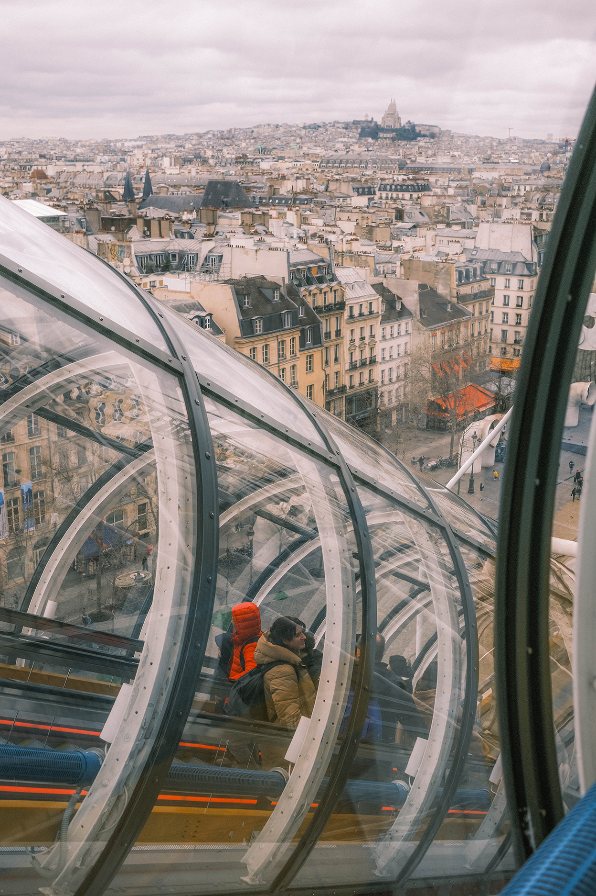
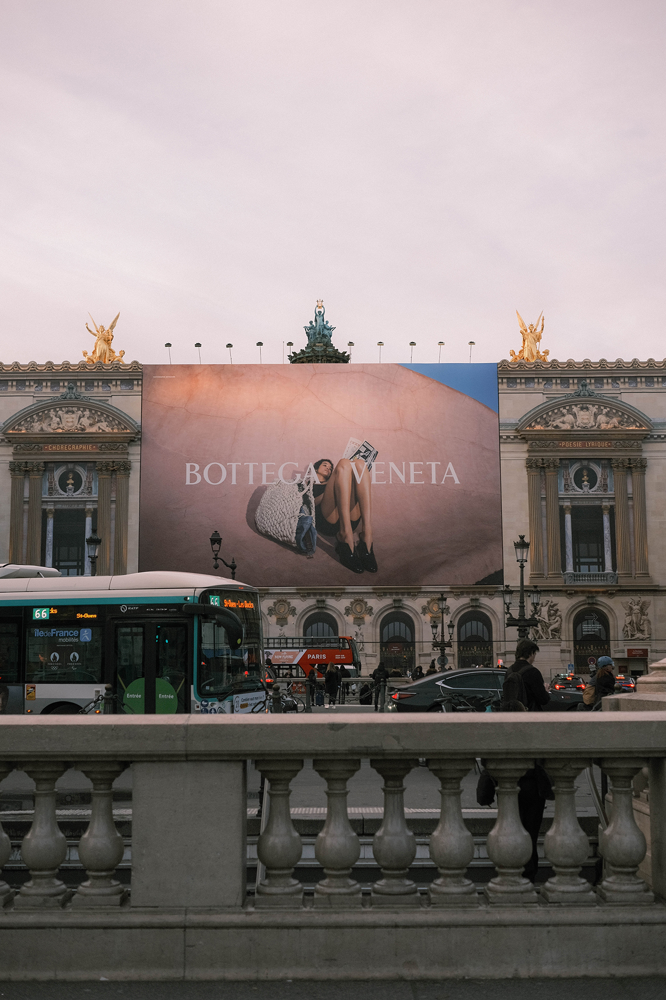

There was something about you that now I can't remember
It's the same damn thing that made my heart surrender
And I'll miss you on a train
I'll miss you in the morning
I never know what to think about
I think about you

- 
- 